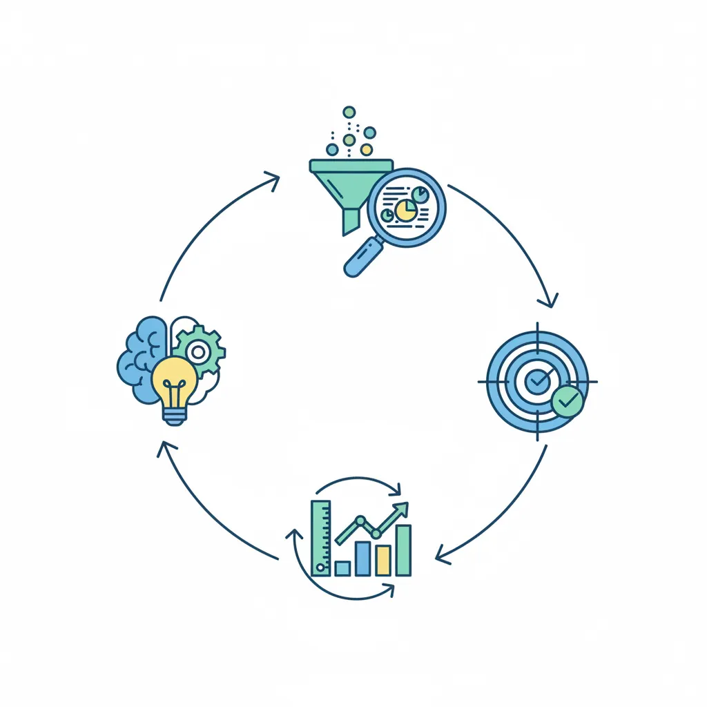
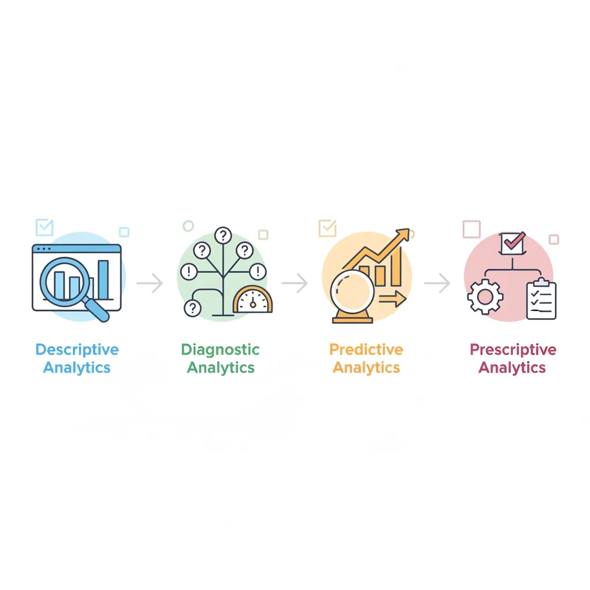
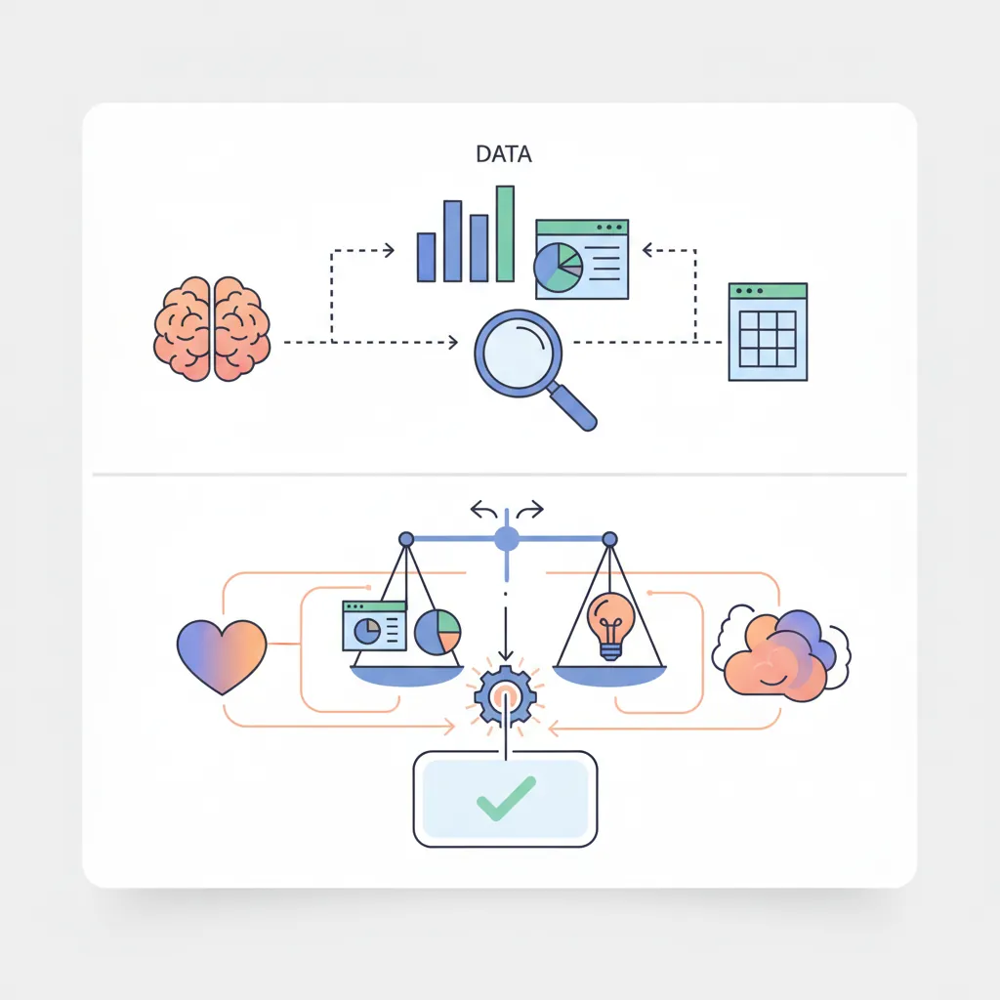
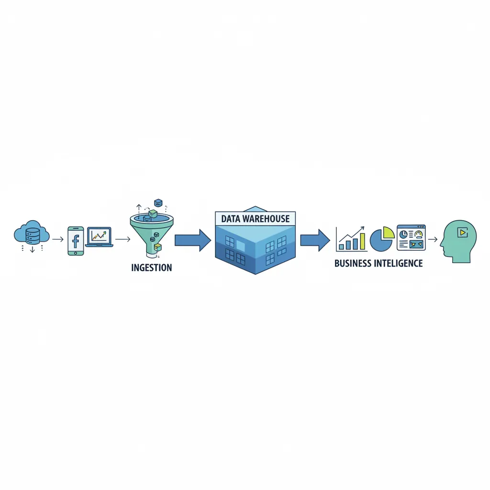
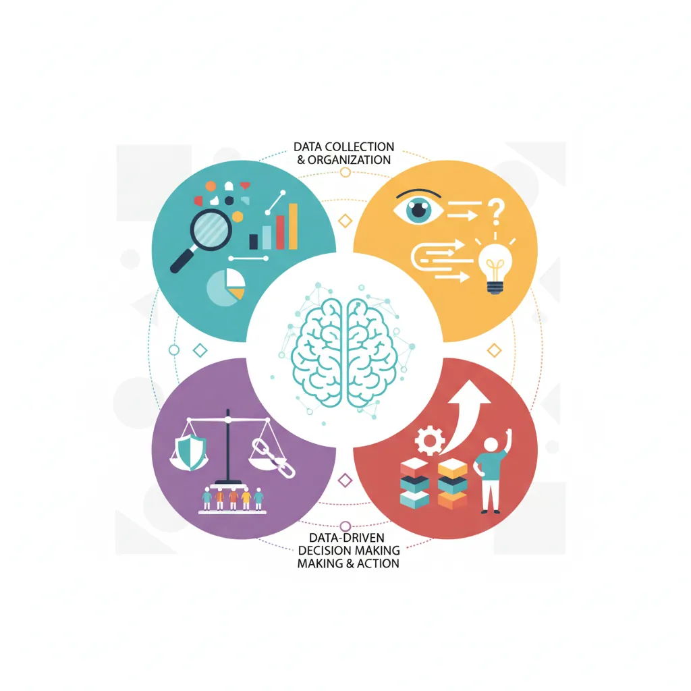

1. Introduction
In today's information-rich world, the organizations that thrive aren't those with the most data—they're the ones that use data most effectively to make decisions. Data-Driven Decision Making (DDDM) is both a mindset and a methodology that transforms how businesses operate.

What is Data-Driven Decision Making?
Data-Driven Decision Making is the practice of basing decisions on the analysis of data rather than purely on intuition, experience, or observation. It doesn't mean ignoring human judgment—it means informing that judgment with evidence.
Key Insight
DDDM isn't about replacing human judgment with algorithms. It's about ensuring decisions are grounded in evidence while still leveraging experience, context, and intuition. The best decisions combine both.
Think of it like driving with a GPS versus driving from memory. You still need to watch the road, react to traffic, and make judgment calls—but the GPS gives you real-time data to inform your choices.
Why DDDM Matters
Organizations that embrace DDDM consistently outperform those that don't:
| Benefit | Impact | Example |
|---|---|---|
| Better Accuracy | Reduce errors in forecasting and planning | Netflix saves $1B/year with recommendation algorithms |
| Faster Decisions | Automate routine choices; focus on strategic ones | Amazon's dynamic pricing adjusts millions of prices daily |
| Reduced Bias | Challenge assumptions with evidence | Google's hiring shifted to structured interviews based on outcome data |
| Alignment | Create shared understanding across teams | OKRs backed by metrics drive cross-functional coordination |
| Continuous Learning | Measure, learn, and improve systematically | A/B testing enables constant product optimization |
The Cost of Not Using Data
Studies suggest that gut-based decisions fail 60-70% of the time in novel or complex situations. The HiPPO effect (Highest Paid Person's Opinion) can cost organizations millions when experienced leaders extrapolate from outdated patterns.
Data-Driven Decisions
Introduction to Business Analytics & DDDM
Analytics maturity, data-driven culture, business valueDefining & Tracking KPIs
OKRs, leading/lagging indicators, scorecard designDashboard Design & BI Tools
Tableau, Power BI, dashboard best practices, data vizExperimentation & A/B Testing
Hypothesis testing, control groups, sample sizingStatistical Significance & Interpretation
P-values, confidence intervals, effect size, power analysisDecision Frameworks & Structured Decision Making
Decision matrices, Bayesian thinking, risk analysisData Collection & Quality Management
Surveys, ETL, data governance, cleaning pipelinesBusiness Storytelling & Visualization
Narrative structure, chart selection, audience designPredictive Analytics & Forecasting
Regression, time series, ML models, forecasting methodsData-Driven Culture & Organizational Adoption
Change management, data literacy, organizational buy-inFunction-Specific Data Applications
Marketing, finance, operations, HR analyticsCapstone Projects (Portfolio-Ready)
End-to-end analytics projects, portfolio buildingAdvanced Analytics & Automation
ML pipelines, AutoML, real-time analytics, AI integration2. Analytics Types
Analytics maturity progresses through four stages, each building on the previous. Understanding these types helps you know what questions you can answer at each level.

The Analytics Maturity Ladder
VALUE ▲
│
│ ┌────────────────────────────────────────┐
│ │ PRESCRIPTIVE │
│ │ "What should we do?" │
│ │ Optimization, recommendations │
│ └────────────────────────────────────────┘
│ ┌────────────────────────────────────────┐
│ │ PREDICTIVE │
│ │ "What will happen?" │
│ │ Forecasting, machine learning │
│ └────────────────────────────────────────┘
│ ┌────────────────────────────────────────┐
│ │ DIAGNOSTIC │
│ │ "Why did it happen?" │
│ │ Root cause analysis, drill-downs │
│ └────────────────────────────────────────┘
│ ┌────────────────────────────────────────┐
│ │ DESCRIPTIVE │
│ │ "What happened?" │
│ │ Reports, dashboards, KPIs │
│ └────────────────────────────────────────┘
│
└─────────────────────────────────────────────────────────► COMPLEXITY
Descriptive Analytics
"What happened?" — The foundation of all analytics. Descriptive analytics summarizes historical data to understand past performance.
| Technique | Purpose | Example Output |
|---|---|---|
| Aggregation | Summarize large datasets | "Total revenue last quarter: $4.2M" |
| Segmentation | Break down by categories | "Revenue by region: North 45%, South 30%, West 25%" |
| Trending | Show change over time | "MoM growth: +8% in Jan, +12% in Feb" |
| Benchmarking | Compare against standards | "Conversion rate: 3.2% vs industry avg 2.8%" |
Diagnostic Analytics
"Why did it happen?" — Diagnostic analytics digs deeper to identify root causes and correlations.
- Drill-down analysis: "Sales dropped 15%—was it price, volume, or mix?"
- Cohort analysis: "Do customers acquired in Q1 behave differently than Q4?"
- Correlation analysis: "Is there a relationship between support tickets and churn?"
- Anomaly detection: "This spike in errors started after the Tuesday deploy"
Predictive Analytics
"What will happen?" — Using statistical models and machine learning to forecast future outcomes.
Common Predictive Use Cases
- Demand forecasting: Predict next month's sales for inventory planning
- Churn prediction: Identify customers likely to cancel
- Lead scoring: Rank prospects by likelihood to convert
- Fraud detection: Flag suspicious transactions in real-time
- Propensity modeling: Predict who will respond to a campaign
Prescriptive Analytics
"What should we do?" — The most advanced form, prescriptive analytics recommends specific actions.
- Optimization: "Route these 50 trucks to minimize total delivery time"
- Recommendation engines: "Show this user these 5 products"
- Dynamic pricing: "Set price at $47 to maximize revenue given demand curve"
- Resource allocation: "Assign these support tickets to these agents"
3. Data vs Intuition
Data and intuition aren't enemies—they're partners. The key is knowing when to rely more heavily on each.

When to Rely on Data
| Scenario | Why Data Wins |
|---|---|
| High-volume, repetitive decisions | Patterns emerge clearly; consistency matters |
| When cognitive biases are likely | Data challenges confirmation bias, anchoring, availability heuristic |
| Complex multi-variable situations | Humans struggle with >3 variables; models don't |
| High-stakes decisions with available data | Evidence reduces risk; creates accountability |
| Testing competing hypotheses | A/B tests provide definitive answers |
When to Trust Intuition
| Scenario | Why Intuition Adds Value |
|---|---|
| Novel situations with no historical data | Experienced judgment fills the gap |
| Time-critical decisions | Sometimes you can't wait for analysis |
| Qualitative factors hard to quantify | Culture fit, brand voice, ethical considerations |
| Creative and innovative work | Data shows what is; creativity imagines what could be |
| When data quality is poor | Bad data → worse decisions than informed intuition |
The Integration Principle
Use data to generate options and understand trade-offs. Use intuition to weigh intangibles and make the final call. Document your reasoning so you can learn from outcomes either way.
4. Analytics Ecosystem
Before diving into analysis, you need to understand where data comes from and how it flows through your organization.

Modern Data Stack
┌─────────────────────────────────────────────────────────────────────────┐
│ DATA SOURCES │
│ ┌─────────┐ ┌─────────┐ ┌─────────┐ ┌─────────┐ ┌─────────┐ │
│ │ CRM │ │ ERP │ │Web/App │ │ Marketing│ │External │ │
│ │Salesforce│ │ SAP │ │Analytics│ │Platforms │ │ APIs │ │
│ └────┬────┘ └────┬────┘ └────┬────┘ └────┬────┘ └────┬────┘ │
└───────┼────────────┼────────────┼────────────┼────────────┼────────────┘
│ │ │ │ │
▼ ▼ ▼ ▼ ▼
┌─────────────────────────────────────────────────────────────────────────┐
│ DATA INGESTION / ETL │
│ Fivetran, Airbyte, Stitch, Custom Scripts │
│ Extract → Transform → Load │
└─────────────────────────────────────────────────────────────────────────┘
│
▼
┌─────────────────────────────────────────────────────────────────────────┐
│ DATA WAREHOUSE │
│ Snowflake, BigQuery, Redshift, Databricks │
│ Raw → Staging → Marts │
└─────────────────────────────────────────────────────────────────────────┘
│
▼
┌─────────────────────────────────────────────────────────────────────────┐
│ TRANSFORMATION / MODELING │
│ dbt, Dataform, LookML │
│ Business logic, aggregations, metrics │
└─────────────────────────────────────────────────────────────────────────┘
│
▼
┌─────────────────────────────────────────────────────────────────────────┐
│ BI & VISUALIZATION │
│ Tableau, Power BI, Looker, Metabase │
│ Dashboards, Reports, Self-Service │
└─────────────────────────────────────────────────────────────────────────┘
Data Sources
Every organization has multiple data sources:
- Transactional systems: CRM, ERP, POS, order management
- Behavioral data: Web analytics, app events, clickstreams
- Marketing platforms: Google Ads, Facebook, email, attribution
- External data: Market research, economic indicators, weather
- Unstructured data: Support tickets, reviews, social media
Data Pipelines
ETL (Extract, Transform, Load) or ELT pipelines move data from sources to your warehouse:
- Extract: Pull data from source systems via APIs, database connections, or file exports
- Transform: Clean, standardize, and reshape data for analysis
- Load: Store in a central warehouse for querying
Data Warehouses
A data warehouse is your single source of truth—a centralized repository optimized for analytical queries.
| Platform | Best For | Pricing Model |
|---|---|---|
| Snowflake | Flexible scaling, multi-cloud | Compute + storage (usage-based) |
| BigQuery | Google ecosystem, serverless | Query-based + storage |
| Redshift | AWS ecosystem, cost-effective | Instance-based or serverless |
| Databricks | Data science + engineering combo | Compute units + storage |
BI Tools
Business Intelligence tools visualize data and enable self-service analytics:
- Tableau: Industry leader; powerful visualizations; steep learning curve
- Power BI: Microsoft ecosystem; Excel-friendly; competitive pricing
- Looker: Code-first approach; great for governance; now part of Google Cloud
- Metabase: Open-source; easy setup; great for startups
5. Data Literacy Essentials
Before you can make data-driven decisions, you need to understand data fundamentals. This section covers the statistical concepts every decision-maker should know.

Distributions
Understanding how data is distributed helps you choose the right metrics and avoid misinterpretation.
Normal vs Skewed Distributions
NORMAL (BELL CURVE) RIGHT-SKEWED (COMMON IN BUSINESS)
▲ ▲
╱│╲ │╲
╱ │ ╲ │ ╲
╱ │ ╲ │ ╲╲
╱ │ ╲ │ ╲╲╲
╱ │ ╲ │ ╲╲╲╲
────────────────── ──────────────────────────
Mean = Median Mean > Median
Examples: Examples:
• Height • Income
• Test scores • Customer spend
• Manufacturing tolerances • Website session duration
• Measurement errors • Time to resolve tickets
When to Use Median vs Mean
- Mean (average): Use when data is roughly symmetric and outliers are meaningful
- Median (middle value): Use when data is skewed or outliers would distort the picture
- Example: Average customer spend might be $150, but median is $80—a few big spenders skew the mean. Median better represents the "typical" customer.
Correlation vs Causation
One of the most critical concepts in data literacy: correlation does not imply causation.
| Correlation | Possible Explanations |
|---|---|
| Ice cream sales ↔ drowning deaths | Confounding variable: Summer heat causes both |
| Shoe size ↔ reading ability in children | Confounding variable: Age affects both |
| Users who view product pages buy more | Selection bias: Interested buyers view more pages |
To establish causation, you need:
- Controlled experiments (A/B tests)
- Natural experiments (policy changes, external shocks)
- Statistical techniques (regression discontinuity, difference-in-differences)
Bias Awareness
Data can mislead if you're not aware of common biases:
| Bias Type | Description | Example |
|---|---|---|
| Selection Bias | Sample doesn't represent population | Surveying only satisfied customers |
| Survivorship Bias | Only seeing successes, not failures | "Successful companies do X" (ignoring failed ones that did too) |
| Confirmation Bias | Seeking data that confirms beliefs | Cherry-picking metrics that support your position |
| Simpson's Paradox | Trend reverses when data is aggregated | Treatment appears worse overall but better in each subgroup |
6. Conclusion & Next Steps
You now have a solid foundation in data-driven decision making:
Key Takeaways
- DDDM combines data and judgment—neither alone is sufficient
- Four analytics types progress from "what happened" to "what should we do"
- Know when to rely on data (high-volume, complex, bias-prone) vs intuition (novel, time-critical, qualitative)
- Understand the data ecosystem—sources, pipelines, warehouses, BI tools
- Master data literacy basics—distributions, correlation vs causation, bias awareness
In the next article, we'll dive deep into defining and tracking KPIs—the metrics that drive action and accountability in your organization.